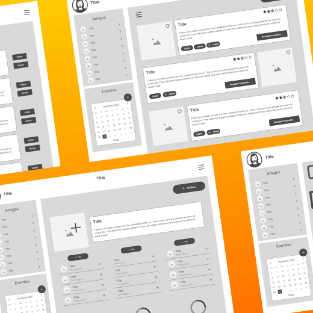
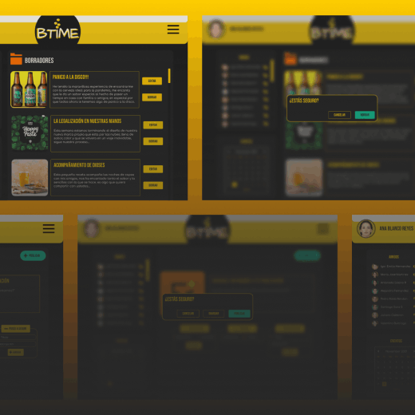

Btime is a web app created to connect people who make or enjoy craft beer. The idea was born from a clear need: many home brewers lack a safe space to share their processes, sell products, or learn from others. Btime brings this community together, allowing them to socialize, attend events, and make new connections.
Risitas Corp is a fictional project combining absurd narrative, interactive design, and virtual reality to help students relieve exam stress. Through an alternate fun universe, users engage in a sabotaged bicycle race with illogical physics and friends-as-obstacles—all designed to disconnect them from academic pressure.
Creating an ecosystem where multiple devices and sensors connect in real-time.
Designing a fun, absurd yet functional narrative that genuinely helped users relax.
Integrating complex tech components with a seamless and immersive user experience.
Development was split into two areas:
Technology: Integration of physical sensors (RPM, gyroscope, etc.), UDP protocol communication with Unity, mobile devices for each game role (Cyclist, Saboteur, Master), and a VR system using Tilia to immerse users in a carefree absurd experience.
Design: Building a user experience focused on escapism and entertainment, with interfaces designed at multiple fidelity levels.
A cadence sensor measuring the cyclist's RPM, an M5Stack sensor controlling simulator direction, UDP protocol systems for:
- Saboteur: Player receiving tasks to alter the race.
- Master: Sending missions/effects to Cyclist and Saboteur.
- Unity + Tilia: Full device-environment visual integration.
Software: Figma (UI across all phases: low/mid/high fidelity), image editing, button/screen design.
UX/UI Design: User-centered Journey Map, simple/intuitive environment, and a safe space for distraction, sharing, and laughter.
We use humor as a tool to combat stress. In a parallel world where everything is possible (even passing that exam you didn't study for), Risitas Corp has built an experience that blends play, social interaction, and emotional escape, all within a chaotic race that reflects the chaos of finals... but with laughter.


Designed to support caregivers of people with Alzheimer's. Through an accessible interface, empathetic voice, and intuitive visual resources, Memo provides clear information and practical tools to address the challenges of caregiving. Inspired by the companionship and adaptability of a kitten, this project seeks to humanize technology and provide emotional support to those who need it most.
Alzheimer's affects over 50 million people worldwide. In Latin America, more than 3.4 million live with this form of dementia. Many caregivers are family members with no prior experience, facing an overwhelming task without proper tools.
Our goal was to create an accessible, practical, and reliable tool to improve understanding of the disease and provide emotional/informational support.
1. In-depth research: Context analysis paired with interviews with Alzheimer's specialists and rigorous reviews of medical sources/support communities.
2. User understanding: We targeted caregivers with little-to-no medical training, needing clarity, simplicity, and emotional guidance—who struggled to find centralized information.
3. Experience-centered design: We prioritized accessibility and intuitive use with practical value, using Figma for screen designs and Reaper for audio editing (assistant's voice), simplifying learning curves for non-tech users.


Cats are loyal animals providing non-intrusive emotional support. Like caregivers, Memo adapts to diverse environments/needs—symbolizing the pursuit of constant knowledge.

We used clear, intuitive care-focused iconography for quick function recognition. A primary color conveying trust/care/knowledge, and a professionally edited voice for warmth, empathy, and utility.
This infographic is part of a 10-piece series exploring Zenitsu Agatsuma (from Demon Slayer: Kimetsu no Yaiba) in depth. Its innovative 3D approach blends three content types:
Grounds viewers in the Taishō era, covering Japan’s sociopolitical, economic, and cultural events relevant to the story.
Explores the anime’s fictional universe, including the Demon Slayer Corps’ hierarchy, tools, and lore.
Details Zenitsu’s backstory, abilities, motivations, and evolution as a warrior.
Uses sequential visual storytelling—each section feels like a scene in a larger narrative. Incorporates original manga panels and technical illustrations for richness.
Inspired by Japanese history manuals (anatomical/sociopolitical diagrams) and the original manga. Figma was used to emulate an educational visual book.
Synthesizing three distinct contexts without overwhelming users—achieved through information curation, graphic coherence, and Zenitsu-centric framing.
The story is told from the perspective of "Endeavour," one of six rovers sent to Mars in 2025. Its mission was to gather resources and critical data to enable colonization. After succeeding, Endeavour becomes the narrator of this Martian epic, guiding users through 86 years of human evolution on Mars (2035-2121).

The visual style blends retrofuturism and flat design, with contrasting color palettes distinguishing Earth, Mars, and space.
Clean vector illustrations, human silhouettes, and schematic lines reference both educational materials and sci-fi interfaces.
The core challenge was crafting a coherent, educational yet believable sci-fi narrative. Inspired by:
- Real NASA missions
- Game interfaces
- Educational shows like Cosmos
- Graphic novels like The Martian
- Scientific infographic aesthetics